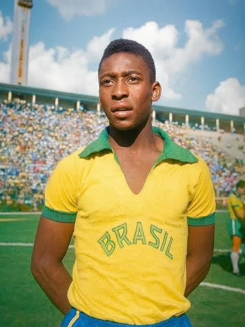

Hall da Fama do Futebol
Os maiores jogadores da história, reunidos em um só lugar
Lendas: anos 1950 a 1990
Os sete jogadores desta página criaram o vocabulário do futebol moderno: o drible
como arte, o goleiro que joga com os pés, o zagueiro que conduz a bola, o
camisa 10 que decide sozinho.
Os perfis
Pelé
Edson Arantes do Nascimento — o Rei do Futebol

Edson Arantes do Nascimento
Aos 17 anos, foi decisivo na primeira Copa do Mundo vencida pelo Brasil, em
1958. É o único jogador a ter conquistado três Copas. Pela seleção, a
CBF contabiliza 77 gols
em 92 jogos oficiais. Segundo o Guinness, marcou 1.279 gols em 1.363 partidas
na carreira, contando amistosos.
Ponta-direita de dribles imprevisíveis, foi o grande nome da Copa de 1962,
quando assumiu o time após a lesão de Pelé e foi eleito o melhor jogador do
torneio. Nunca perdeu uma partida em que jogou ao lado de Pelé pela seleção.
Foi o motor do Real Madrid que ganhou as cinco primeiras edições da Copa dos
Campeões da Europa, de 1956 a 1960, e marcou em todas as finais. Jogava em
todas as posições do meio-campo para a frente. Atuou por Argentina, Colômbia
e Espanha, mas nunca disputou uma Copa do Mundo.
Vestia sempre preto e comandava a defesa aos gritos, saindo do gol para
cortar cruzamentos, algo pouco comum na época. Ganhou o ouro olímpico em 1956
e a Eurocopa de 1960 pela União Soviética. Hoje, o prêmio de melhor goleiro
do mundo leva o seu nome.
Levou o Ajax a três títulos seguidos da Copa dos Campeões (1971, 1972 e 1973)
e foi o grande nome da Holanda vice-campeã mundial em 1974. Depois, como
técnico do Barcelona, ajudou a plantar a filosofia de jogo que marcaria o
clube por décadas.
Reinventou a posição de líbero: em vez de só marcar, conduzia a bola e
iniciava o ataque. Capitão da Alemanha Ocidental campeã mundial em 1974, foi
também o técnico do título de 1990, um dos poucos a vencer a Copa como
jogador e como treinador. No Bayern, ganhou a Copa dos Campeões três vezes
seguidas (1974, 1975 e 1976).
Na Copa de 1986, conduziu a Argentina ao título praticamente sozinho e foi
eleito o melhor jogador do torneio. Nas quartas de final, contra a Inglaterra,
fez dois gols que entraram para a história: um com a mão, que ele mesmo
batizou de "mão de Deus", e outro, minutos depois, driblando meio time
adversário. No Napoli, ganhou dois campeonatos italianos (1987 e 1990) e a
Copa da UEFA de 1989.
Foi um pouco com a cabeça de Maradona e um pouco com a mão de Deus.
Por que Di Stéfano e Yashin estão aqui se nunca ganharam uma Copa?
Di Stéfano nunca disputou uma Copa do Mundo, e Yashin não venceu nenhuma.
Mesmo assim, o primeiro definiu uma era do futebol de clubes, e o segundo
mudou para sempre a função do goleiro. Influência e longevidade também
contam como critério.
Onde estão Platini, Van Basten e Puskás?
Todos três seriam candidatos fortes. Michel Platini (três Bolas de Ouro
seguidas, de 1983 a 1985), Marco van Basten (três, em 1988, 1989 e 1992) e
Ferenc Puskás (artilheiro histórico da Hungria) podem ser indicados na
página Indicar um craque.